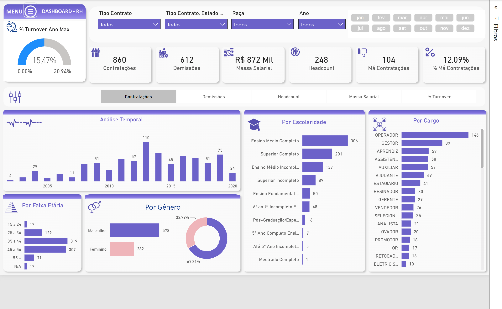
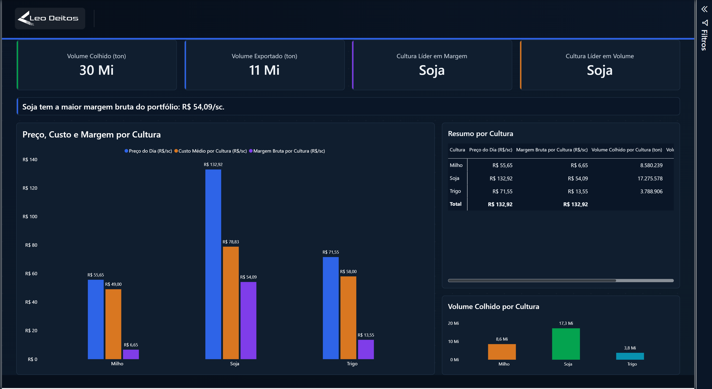

Construo dashboards que transformam dados operacionais e de mercado em decisões rápidas — do agronegócio ao financeiro, com foco em clareza visual e indicadores que realmente importam.
Uma seleção de dashboards desenvolvidos para acompanhamento de mercado e operação.
O mesmo painel de cotações de grãos, reconstruído em HTML/JS puro — sem Power BI. Filtro de ano, KPIs calculados ao vivo e alternância de tema claro/escuro, tudo clicável.
Abrir painel
Ao vivoHeadcount, turnover, qualidade de contratação, horas extras e absenteísmo, com menu de navegação próprio e análise completa dos indicadores.
Ver estudo de caso
Acompanhamento de preço, custo e margem de soja, milho e trigo, com produção por mesorregião e histórico de cotação mensal.
Ver estudo de casoMais projetos em breve.
Sou Leo Deitos, atuo com dashboards e Business Intelligence, traduzindo dados de operação e de mercado em painéis claros e objetivos para apoiar decisões — com experiência prática em dados do agronegócio (grãos, safra, preço e margem).